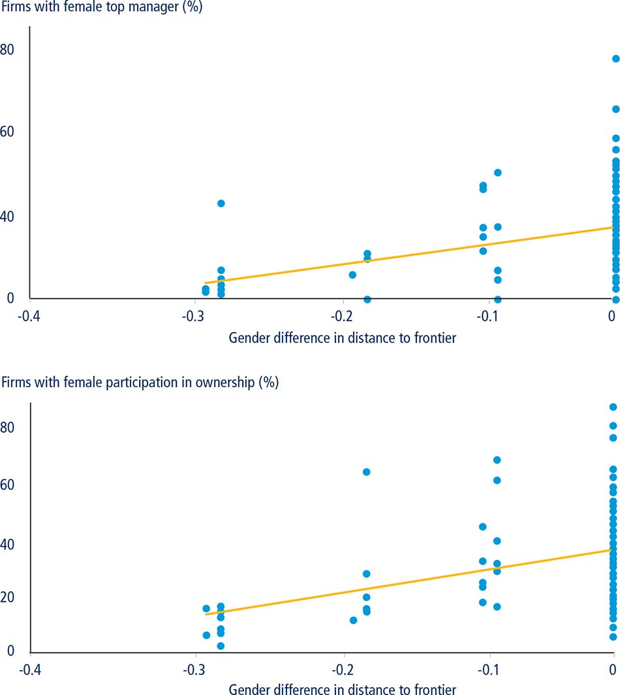

The opportunity to find a job or develop one’s business idea is crucial for most people’s personal satisfaction. It creates a sense of belonging and purpose and can provide an income that delivers financial stability. It can raise people out of poverty or prevent them from falling into it.
But what does one need to find a job or to start a business, especially if that job or business is in the private sector? Many things are needed, but well-functioning markets—that are properly regulated so that distortions are minimized—are crucial. Governments play a pivotal role in establishing these well-functioning markets through regulation. If the land registry is not required to provide reliable information on who owns what, for example, the efficacy of the property market is undermined making it difficult for entrepreneurs to acquire property, put their ideas to practice and create new jobs. Without well-regulated credit information sharing systems it is difficult for credit markets to thrive and be more inclusive. A properly functioning tax system is also key. Where the burden of tax administration is heavy—making it difficult to comply with tax obligations—firms will have an incentive to avoid paying all taxes due or may opt for informality, thereby eroding the tax base.
▪ Doing Business measures aspects of regulation that enable or prevent private sector businesses from starting, operating and expanding. These regulations are measured using 11 indicator sets: starting a business, dealing with construction permits, getting electricity, registering property, getting credit, protecting minority investors, paying taxes, trading across borders, enforcing contracts, resolving insolvency and labor market regulation.
▪ Doing Business 2017 expands the paying taxes indicators to cover postfiling processes—tax audits, tax refunds and tax appeals—and presents analysis of pilot data on selling to the government which measures public procurement regulations.
▪ Using the data originally developed by Women, Business and the Law, this year for the first time Doing Business adds a gender component to three indicators—starting a business, registering property, and enforcing contracts—and finds that those economies which limit women’s access in these areas have fewer women working in the private sector both as employers and employees.
▪ New data show that there has been an increase in the pace of reform—more economies are reforming and implementing more reforms.
▪ Doing Business has recorded over 2,900 regulatory reforms across 186 economies since 2004. Europe and Central Asia has consistently been the region with the highest average number of reforms per economy; the region is now close to having the same good practices in place as the OECD high-income economies. A number of countries in the region—Georgia, Latvia, Lithuania, and the former Yugoslav Republic of Macedonia—are now ranked among the top 30 economies in Doing Business.
▪ Better performance in Doing Business is on average associated with lower levels of income inequality. This is particularly the case regarding the starting a business and resolving insolvency indicator sets.
To start a business, entrepreneurs need a business registration system that is efficient and accessible to all. Doing Business data on Argentina, for example, show that it takes 14 procedures to start a new business, double the global average of just seven. So it is perhaps unsurprising that there are only 0.43 formal new businesses per 1,000 adults in Argentina. By contrast, in Georgia—where three procedures are sufficient to start a business—there are over 5.65 formal new businesses per 1,000 adults.
Failure is part of taking risks and innovating. For people to be willing to start a new business there needs to be a well-developed system in place for closing businesses that do not succeed. In addition to the complicated entry process in Argentina, if the business fails only 23 cents on the dollar are recovered after going through an insolvency proceeding. By contrast, in the Czech Republic the same business failure would have a recovery rate of 67 cents on the dollar. This higher recovery rate also helps to explain the larger number of new businesses in Prague (at 3.42 formal new businesses per 1,000 adults) than in Buenos Aires.
Doing Business focuses on regulation that affects small and medium-size enterprises, operating in the largest business city of an economy, across 11 areas.1 Ten of these areas—starting a business, dealing with construction permits, getting electricity, registering property, getting credit, protecting minority investors, paying taxes, trading across borders, enforcing contracts and resolving insolvency—are included in the distance to frontier score and ease of doing business ranking. Doing Business also publishes indicators on labor market regulation which are not included in the distance to frontier score or ease of doing business ranking. The economic literature has shown the importance of such regulations for firm and job creation, international trade and financial inclusion. For more discussion on this literature, see the chapter About Doing Business.
Over time, Doing Business has evolved from focusing mainly on the efficiency of regulatory processes to also measure the quality of business regulation. Doing Business not only measures whether there is, for example, a fast, simple and affordable process for transferring property but also whether the land administration has systems in place that ensure the accuracy of the information about that transfer.
This year Doing Business expands further by adding postfiling processes to the paying taxes indicators, including a gender component in three of the indicators and developing a new pilot indicator set on selling to the government (figure 1.1). Also for the first time this year Doing Business collects data on Somalia, bringing the total number of economies covered to 190.
FIGURE 1.1 What is changing in Doing Business?
Source: Doing Business database.
Although conceptually important, these changes have a small impact on the distance to frontier and the overall doing business ranking. In paying taxes, the new postfiling processes component accounts for only 25% of the overall indicator set and, furthermore, there is a positive correlation between the old and new part of the indicator.2 Economies that have efficient processes for paying taxes during the regular filing period also tend to have efficient processes in the postfiling period. For the most part, the formal regulatory environment as measured by Doing Business does not differentiate procedures according to the gender of the business owner. The addition of gender components to three separate indicators has a small impact on each of them and therefore a small impact overall. However, even if business regulation as measured by Doing Business is gender blind in the majority of economies, this does not mean that in practice men and women have equal opportunities as business owners. Firms owned by women, for example, tend to be smaller and less profitable than firms owned by men.3
While economies that do well in the existing dimensions of the regulatory environment covered by Doing Business also tend to do well in the new aspects measured this year, it nevertheless is important to document regulatory practices in these new areas. Doing so helps to document standards of good practices in new areas of regulation which policy makers can use to chart out reforms and set benchmarks. For more information on the Doing Business methodology, see the data notes.
The paying taxes indicator set is expanded this year to include postfiling processes—those processes that occur after a firm complies with its regular tax obligations. These include tax refunds, tax audits and tax appeals. In particular Doing Business measures the time it takes to get a value added tax (VAT) refund, deal with a simple mistake on a corporate income tax return that can potentially trigger an audit and good practices in administrative appeal processes.
The VAT refund is an integral component of a modern VAT system. The VAT has statutory incidence on the final consumer, not on businesses. According to the tax policy guidelines set out by the Organisation for Economic Co-operation and Development (OECD) a VAT system should be neutral and efficient.4 Some businesses will incur more VAT on their purchases than they collect on their taxable sales in a given tax period and therefore should be entitled to claim the difference from the tax authorities. Doing Business data show that OECD high-income economies process VAT refunds the most efficiently with an average of 14.4 weeks to issue a reimbursement (even including some economies where an audit is likely to be conducted).
To analyze tax audits the Doing Business case study scenario was expanded to assume that a company made a simple error in the calculation of its income tax liability, leading to an incorrect corporate income tax return and consequently an underpayment of due income tax liability. The firm discovered the error and voluntarily notified the tax authority. In 74 economies—even following immediate notification by the taxpayer—the error in the income tax return is likely to trigger an audit. And in 38 economies this error will lead to a comprehensive audit of the tax return. OECD high-income economies as well as Europe and Central Asia economies have the simplest processes in place to correct a minor mistake in the income tax return. For an analysis of the data for the indicators, see the case study on paying taxes.
This year for the first time Doing Business adds gender components to three indicator sets included in the distance to frontier score and ease of doing business ranking. These are starting a business, registering property and enforcing contracts. This addition is based on data originally collected by Women, Business and the Law5 and updated by Doing Business.
Why is it important to incorporate a measure of gender differences? First, around half of the world’s population is female and therefore it is important that Doing Business measures aspects of regulation that specifically impact this large group. For some years now the Women, Business and the Law data have shown, for example, that in some economies a female entrepreneur faces more obstacles than her male counterpart for a variety of economic and business activities. To the extent that these obstacles are ignored, the Doing Business data will be incomplete. More importantly, over the last two decades we have learned a great deal about the relationship between various dimensions of gender inequality and economic growth.6
There is ample evidence that those economies that have integrated women more rapidly into the workforce have improved their international competitiveness by developing export-oriented manufacturing industries that tend to favor the employment of women. For the most part, legal gender disparities have been shown to have a strong link with female labor force participation.7 Studies have also shown a clear link between economic growth and development and female labor force participation.8
Gender discrimination limits choices and creates distortions that can lead to less efficient outcomes. An employer’s decision not to hire a woman based solely on her gender can lead to lower productivity for that particular firm. Where this practice is widespread it can have negative effects at the macro level—an economy’s output and growth potential can be lower because of gender discrimination.9
The Women, Business and the Law team has documented and measured the legal disparities that are relevant to a woman’s economic empowerment. Economies where there are more gender differences (as measured by Women, Business and the Law) perform worse on average on several important economic and social development variables: formal years of education for women compared to men are lower, labor force participation rates for women compared to men are lower, the proportion of top managers who are women is lower, the proportion of women in parliament is lower, the percentage of women that borrow from financial institutions relative to men is lower and child mortality rates are higher.10
Doing Business builds on the work of Women, Business and the Law by adding gender components to three indicator sets this year. Starting a business now includes two case studies—one where the entrepreneurs are men and one where the entrepreneurs are women—in order to address a previous lack of data on those economies where women face a higher number of procedures. Registering property now measures legal gender differentiations in property rights for ownership, use and transfer. And enforcing contracts was expanded to measure whether women’s and men’s testimony have the same evidentiary weight in civil courts. These three areas were selected because there is enough evidence to show their relevance for economic development and because they fit well within the Doing Business methodology. One new area—quotas for women in corporate boards—was studied but not included in this year’s report because the evidence in this area has been mixed so far (box 1.1).
BOX 1.1 Women in corporate boards
Building on Women, Business and the Law data, this year Doing Business collected data on regulation that imposes quotas for women in corporate boards as well as sanctions and incentives for meeting those quotas. The data show that nine economies have such provisions. Seven of the nine economies that define quotas for women in corporate boards or impose penalties for noncompliance are OECD high-income economies—namely Belgium, France, Germany, Iceland, Israel, Italy and Norway. This type of regulation exists in other regions of the world but it is less common. The law in India, for example, requires that publicly-listed companies have at least one director that is a woman. Any business appointing a woman to a management position in Sierra Leone is now eligible for a tax credit equal to 6.5% of that female manager’s compensation.
Although the data were collected, they were not included in the Doing Business indicators because the empirical evidence on the value of quotas for women in corporate boards is mixed. For example, some studies have questioned the link between women in the boardroom and firm performance, finding either no relationship between gender diversity and performance or even a negative relationship.a A Norwegian law mandating 40% representation of women in corporate boards is probably the most researched regulation in this area. One study finds that there were no significant reductions in gender wage gaps.b Another study of the same regulation reports a significant drop in stock prices when the law was made public and a deterioration in operating performance.c Nevertheless, another study found that firms with women in corporate boards undertake fewer workforce reductions than firms with only male board members.d
However, there are patterns of positive firm outcomes connected to the presence of women in important decision-making positions. Quoting a broad range of studies, the World Bank argues that low gender diversity in corporate boards “is seen by many as undermining a company’s potential value and growth. Higher diversity is often thought to improve the board’s functioning by increasing its monitoring capacity, broadening its access to information on its potential customer base, and enhancing its creativity by multiplying viewpoints. Greater diversity implies that board directors can be selected from a broader talent pool.”e Indeed, there is evidence that companies benefit from fostering an increase in the number of women board directors. A study comparing the top and bottom quartiles of women board directors at Fortune 500 companies found that where there were higher numbers of women on the board the companies thrived.f Analyzing financial measures such as return on equity, return on sales, and return on invested capital, this study established that companies with more women board directors were able to outperform those with fewer by between 42 and 66%.
There is also evidence that companies with greater participation of women in boards tend to have stronger ethical foundations. According to a report from the index provider MSCI, bribery, fraud or other corporate governance scandals are less common in corporations with more women on their boards. The dataset used in this analysis included 6,500 boards globally.g
a. van Dijk and others 2012; Adams and Ferreira 2009.
b. Bertrand and others 2014.
c. Ahern and Dittmar 2012.
d. Matsa and Miller 2013.
e. World Bank 2011.
f. Joy and others 2007.
g. Lee and others 2015.
Several studies highlight the importance of equal opportunities for women entrepreneurs, creating the need to measure the differences faced by women entrepreneurs when starting a new business.11 Research also shows the importance of equal rules regarding property rights for men and women. One study finds that after a reform to the family law in Ethiopia that established more equitable property rights over marital property between spouses, there was an increase in female labor force participation and in more productive sectors.12 Another study finds that after changes were made to the Hindu Succession Act improving inheritance rights for women in India, there was an increase in education for girls.13 Improving land tenure security benefits all, but a study of Rwanda’s land tenure regularization program showed that women benefit the most.14
Twenty-three economies impose more procedures for women than men to start a business. Sixteen limit women’s ability to own, use and transfer property. And in 17 economies, the civil courts do not value a woman’s testimony the same way as a man’s.
Three gender-related measures were added to the starting a business indicator set—whether a woman requires permission to leave the house, whether there are gender-specific identification procedures and whether a married woman requires her husband’s permission to start a business. In 17 economies a married woman cannot leave the house without her husband’s permission by law. Although in practice this law may not be enforced, it still reduces women’s bargaining power within the household and can undermine their ability to pursue a business venture. In three economies the process of obtaining official identification is different for men and women. The official identification document is a pre-requisite to starting a business. Doing Business has not traditionally captured the process of obtaining identification in starting a business; it is assumed that the entrepreneur has identification before deciding to create a new business. However, when capturing gender-specific procedures it is crucial to include female-specific requirements. In Benin, for example, a married woman must present a marriage certificate when applying for identification but the same requirement does not apply to a married man. In four economies a woman requires her husband’s explicit permission to start a business. This is the case in the Democratic Republic of Congo, where by law a married woman needs the authorization of her husband to incorporate a business.
The registering property indicators now include two aspects regarding ownership rights. Doing Business measures whether unmarried men and unmarried women have equal ownership rights to property. Only two economies—Swaziland and Tonga—grant fewer rights to unmarried women. However, when the same question is used to compare the property rights of married men with married women, differences arise in 16 economies. Restrictions on property ownership are far more common for married women because these are normally linked to family and marriage codes.
Restrictions for women on starting a business are more frequent in economies in both the Middle East and North Africa and Sub-Saharan Africa. The restrictions measured in registering property are more prevalent in Sub-Saharan Africa, while those measured in enforcing contracts are more present in the Middle East and North Africa. However, these types of restrictions are present in every region except Europe and Central Asia. Only one OECD high-income economy still has a restriction—in Chile the law provides fewer property rights to married women than to married men.
Economies with more restrictions for women tend to have on average lower female labor force participation and a lower percentage of female labor force relative to male. The same relationship applies to women’s participation in firm ownership and management (figure 1.2). In fact, the new gender components added to the distance to frontier have a strong association with outcomes that represent women’s economic empowerment. These results are associations and cannot be interpreted in a causal fashion.
FIGURE 1.2 Less equal business regulation is associated with fewer women running firms

Sources: Doing Business database; Enterprise Surveys database (http://www.enterprisesurveys.org), World Bank.
Note: The relationship between the percentage of firms with female participation in ownership and the difference in distance to frontier due to the addition of gender components in three topics is significant at the 1% level after controlling for income per capita. The same applies when the analysis is done using the percentage of firms with a female top manager.
Public procurement is the process of purchasing goods, services or works by the public sector from the private sector. Overall, public procurement represents on average 10 to 25% of GDP, making the procurement market a unique pool of business opportunities for the private sector.15 This year Doing Business includes an annex with analysis of a pilot indicator set on public procurement regulation called “selling to the government.” The procurement process is studied across five main areas: accessibility and transparency, bid security, payment delays, incentives for small and medium-size enterprises and complaints mechanisms. For accessibility and transparency, the annex discusses data on whether information is accessible to prospective bidders and how that information can be accessed. For bid security, the indicators measure the amount that prospective bidders need to pay upfront in order to be considered in the bidding process and the form of the security deposit. For payment delays, the annex discusses data on the time it takes for the firm to receive payment from the government after the contract is completed and the service has been delivered. The incentives for small and medium-size enterprises component measures whether economies have set up specific legal provisions or policies to promote fair access for small and medium-size enterprises to government contracts. And for the complaints mechanism component, the indicators measure the process to file a grievance regarding a public procurement project including who can file a complaint, where to file a complaint and the independence of the review body as well as what remedies are granted.
The data show that 97% of the 78 economies analyzed have at least one or more online portals dedicated to public procurement and that close to 90% of economies impose a bid security deposit requirement that suppliers must fulfill for their bid to be considered. In 37% of the economies included in the selling to the government indicators, payment occurs on average within 30 days while in 48% of the economies suppliers can expect to receive payments between 31 and 90 days following completion of the contract. This analysis is presented in the annex on selling to the government and the data are available on the Doing Business website.
Doing Business scores economies based on how business friendly their regulatory systems are using the distance to frontier score and the ease of doing business ranking. The distance to frontier score measures the distance of each economy to the “frontier,” which represents the best performance observed on each of the indicators across all economies in the Doing Business sample since 2005 or the third year in which data were collected for the indicator. For the getting electricity indicators, for example, the frontier is set at three procedures, 18 days and no cost to obtain a new electricity connection in the economy’s largest business city. The worst for the same group of indicators is set at 9 procedures, 248 days and 81 times the economy’s income per capita as the cost. In addition, the getting electricity indicators measure the reliability of electricity supply and transparency of tariffs through an index ranging from 0 to 8; in this case 8 is the frontier score. For example, in the case of reliability and transparency, an economy with a score of 6 would be considered to be 75% of the way to the frontier and would have a distance to frontier score of that value. The ease of doing business ranking is based on economies’ relative positions on the distance to frontier scores on ten different Doing Business indicator sets. For more details, see the chapter on the distance to frontier and ease of doing business ranking.
There was some change in the 20 economies with the top scores due mainly to the implementation of business regulatory reforms (table 1.1) and, to a much lesser extent, on account of the methodology changes mentioned above. Austria, Georgia and Latvia join the top 20 economies this year. Georgia implemented five reforms as measured by Doing Business. And Latvia implemented two – it improved access to credit information (by launching a private credit bureau) and made it easier to file taxes (electronically). Although the top 20 economies already have simple, effective and accessible business regulations, they continued to implement reforms this year with a total of 20 reforms implemented among them. Hong Kong SAR, China, for example, made starting a business less costly by reducing the business registration fee while Sweden made it easier to transfer property and Norway made enforcing contracts easier by introducing an electronic filing system.
TABLE 1.1 Ease of doing business ranking
Source: Doing Business database.
Note: The rankings are benchmarked to June 2016 and based on the average of each economy’s distance to frontier (DTF) scores for the 10 topics included in this year’s aggregate ranking. For the economies for which the data cover two cities, scores are a population-weighted average for the two cities. An arrow indicates an improvement in the score between 2015 and 2016 (and therefore an improvement in the overall business environment as measured by Doing Business), while the absence of one indicates either no improvement or a deterioration in the score. The score for both years is based on the new methodology.
OECD high-income economies have on average the most business-friendly regulatory systems, followed by Europe and Central Asia (figure 1.3). There is, however, a large variation within those two regions. New Zealand has a ranking of 1 while Greece has a ranking of 61; FYR Macedonia stands at 10 while Tajikistan is at 128. The Sub-Saharan Africa region continues to be home to the economies with the least business-friendly regulations on average. However, this year the regional improvement in the distance to frontier score for Sub-Saharan Africa was almost three times as high as the average improvement for OECD high-income economies. Nevertheless, there is still a long way for Sub-Saharan Africa to go: it takes 60 days on average to transfer property in that region, for example, compared to only 22 days for the same transaction in OECD high-income economies.
FIGURE 1.3 The biggest gaps between regulatory efficiency and regulatory quality are in the Middle East and North Africa and in Sub-Saharan Africa
Source: Doing Business database.
Note: The distance to frontier score for regulatory efficiency is the aggregate score for the procedures (where applicable), time and cost indicators from the following indicator sets: starting a business (also including the minimum capital requirement indicator), dealing with construction permits, getting electricity, registering property, paying taxes (also including the postfiling index), trading across borders, enforcing contracts and resolving insolvency. The distance to frontier score for regulatory quality is the aggregate score for getting credit and protecting minority investors as well as the regulatory quality indices from the indicator sets on dealing with construction permits, getting electricity, registering property, enforcing contracts and resolving insolvency.
Following the expansion of the scope of the indicators in last year’s report, Doing Business now provides further clarity on the differences between well-designed and badly designed regulation. New data on the quality of regulation make it easier to identify where regulation is enabling businesses to thrive and where it is enabling rent seeking. Doing Business measures the quality of regulation by focusing on whether an economy has in place the rules and processes that can lead to good outcomes, linked in each case to Doing Business measures of efficiency. Scores are higher for economies that, for example, have a land administration system that maintains a dependable database and produces credible titles that are respected as reliable by the legal system. Another way that Doing Business measures regulatory quality is through the building quality control index, which evaluates the quality of building regulations, the strength of quality control and safety mechanisms, liability and insurance regimes and professional certification requirements that ultimately lead to safe buildings. Efficient business regulatory systems allow entrepreneurs to achieve business-related tasks simply, quickly and inexpensively. Therefore, an economy scores better on the metric for regulatory efficiency if it has a system in place that allows entrepreneurs to start a business through a small number of steps, in short time and at lower cost.
Regulatory efficiency and regulatory quality go hand in hand. Economies that have efficient regulatory processes as measured by Doing Business also tend to have good regulatory quality. However, the gap between the two measures varies significantly by region. In OECD high-income economies, the average distance to the frontier score for regulatory efficiency is 79.4 while regulatory quality lags at 73.4. In the Middle East and North Africa and Sub-Saharan Africa the gap between efficiency and quality is larger: on efficiency these regions score 65.4 and 56.5 while on quality they score 45.2 and 36.7, respectively.
In 2015/16, 137 economies worldwide implemented 283 business regulatory reforms. This represents an increase of more than 20% compared to last year. In fact, the number of economies that implemented at least one reform increased from 122 to 137, indicating that there are more economies trying to improve in the areas measured in Doing Business. And 139 economies made an improvement in the distance to frontier score; doing business is now easier and less costly in those economies compared to last year. With 49 reforms, starting a business continues to be the indicator set with the highest number of reforms followed by paying taxes with 46. Of the economies in Europe and Central Asia, 96% implemented at least one Doing Business reform. Sub-Saharan Africa is the region with the second-highest incidence of reforms, with 77% of economies implementing at least one reform captured by Doing Business.
Ten economies are highlighted this year for making the biggest improvements in their business regulations—Brunei Darussalam, Kazakhstan, Kenya, Belarus, Indonesia, Serbia, Georgia, Pakistan, the United Arab Emirates and Bahrain. The ease of doing business ranking for these economies ranges from 144 in Pakistan to 16 in Georgia; on average it is 62. Compared to previous years there is a lower number of top improvers from Sub-Saharan Africa even though this region accounts for over a quarter of all reforms globally.
There are several possible explanations for the increase in reform intensity. One is that economies are increasingly interested in improving business regulatory conditions and therefore are reforming more. Another is that there are more areas where reforms can be captured following the expansion of the Doing Business methodology. The data indicate that both factors have contributed. A substantial number of the reforms implemented this year are in areas that were added since Doing Business 2015 (figure 1.4). Around 26% of the reforms implemented in the expanded indicator sets were only made in these new areas. And another 17% concern both the new and old indicators. Indeed, over 40% of all reforms affected at least one of the components added since Doing Business 2015. The frequency of reform in the new areas varies substantially by topic, with the most reforms occurring within the enforcing contracts and registering property indicators. In registering property, for example, this year the cadastral maps have been digitized and made available online in Jakarta and Surabaya, Indonesia. The online application provides customers with access to a spatial database that allows them to check property boundaries. And in enforcing contracts, the government of Rwanda introduced the Integrated Electronic Case Management System in Kigali city courts and all commercial courts.
FIGURE 1.4 Doing Business reforms in 2015/16 in the areas added since Doing Business 2015
Source: Doing Business database.
Note: The new components added since Doing Business 2015 are: the building quality control index in dealing with construction permits, the reliability of supply and transparency of tariffs index in getting electricity, the quality of land administration index in registering property, 3 points in the strength of legal rights index and 2 points in the depth of credit information index in getting credit, extent of shareholder governance index in protecting minority investors, post-filing in paying taxes, quality of judicial processes index in enforcing contracts and strength of insolvency framework index in resolving insolvency.
For a full discussion of the 283 reforms implemented in 2015/16 and more information on the top improvers, see the chapter on reforming the business environment.
Each year Doing Business captures substantive reforms implemented by economies across all ten indicator sets included in the ease of doing business ranking. Since Doing Business 2005 over 2,900 business regulatory reforms have been implemented in 186 economies. Only Kiribati, Libya, Somalia and South Sudan have not implemented a reform captured by the Doing Business indicators. The majority of these reforms have been made in low-income and middle-income economies, leading to more significant improvements in business regulation compared to high-income economies. The gap between high-income economies and low-income economies is therefore narrowing when it comes to the quality and efficiency of business regulation (figure 1.5).
FIGURE 1.5 Low-income economies have made bigger improvements over time in the quality and efficiency of business regulation
Source: Doing Business database.
Note: The red line shows the average global improvement in the distance to frontier score since 2004. The measure is normalized to range from 0 to 100, with 100 representing the frontier. Because of changes over the years in methodology and in the economies and indicators included, the improvements are measured year on year using pairs of consecutive years with comparable data.
The reform intensity varies considerably across regions. With over 26 reforms per economy since 2004, Europe and Central Asia is the region that has reformed the most intensely since Doing Business began gathering data on business regulation. The global average is around 15 reforms per economy. These reforms have produced significant improvements in business regulation. Since 2004, economies in Europe and Central Asia have improved over 20 points on average in the distance to frontier score, moving into second position in the regional rankings behind the OECD high-income economies for the most business-friendly regulations (figure 1.6).
FIGURE 1.6 Europe and Central Asia has made a substantially bigger improvement in business regulation over time than any other region
Source: Doing Business database.
Note: The red line shows the average global improvement in the distance to frontier score since 2004. The measure is normalized to range from 0 to 100, with 100 representing the frontier. Because of changes over the years in methodology and in the economies and indicators included, the improvements are measured year on year using pairs of consecutive years with comparable data.
How did Europe and Central Asia accomplish this? The most reformed Doing Business areas in Europe and Central Asia are starting a business, paying taxes and getting credit. Georgia, FYR Macedonia, Kazakhstan, Belarus, Armenia, and the Russian Federation have made the most reforms in Europe and Central Asia, implementing over 30 reforms each since 2004. Moreover, seven countries in the region—Armenia, Belarus, Georgia, Kazakhstan, Lithuania, FYR Macedonia and Ukraine—reformed across all Doing Business indicators. Another 13 economies implemented reforms in eight to 10 areas measured by Doing Business. This shows that economies tend to expand their reform efforts to encompass multiple business regulatory environments rather than choosing a narrow reform path.
The region with the lowest average number of reforms per economy is East Asia and the Pacific with 13 reforms per economy since 2004. This is partly due to the fact that the Pacific islands have been slow to reform. The OECD high-income economies have the lowest average improvement, mainly because of reduced room for progress. It is hard to advance by much when you are already close to the top.
Reforming the requirements for starting a business is by far the most common area for reform—586 reforms have been captured by the starting a business indicator set since 2004 (figure 1.7). Only 14 economies have not improved their business registration processes. One of these economies is República Bolivariana de Venezuela, where it takes 230 days to start a new business, significantly higher than the global average of 21 days (down from 51 days in 2003). In the past year, República Bolivariana de Venezuela has actually made the process more time consuming—an increase of 44 days—by limiting the work schedule of the public sector amidst an energy crisis.
FIGURE 1.7 Economies have improved regulatory processes the most in the area of starting a business
Source: Doing Business database.
Note: The red line shows the average global improvement in the distance to frontier score since 2004. The measure is normalized to range from 0 to 100, with 100 representing the frontier. Because of changes over the years in methodology and in the economies and indicators included, the improvements are measured year on year using pairs of consecutive years with comparable data.
The indicator set with the second highest number of reforms is paying taxes, with 443 reforms implemented since 2004. But reforms captured within the getting credit indicators—although there were only 400 recorded—have resulted in a bigger improvement in the distance to frontier score. The data also show that court systems, as captured in both the enforcing contracts and resolving insolvency indicator sets, are the institutions reformed least frequently.
A recent World Bank report focusing on poverty and shared prosperity provides new evidence on the status of income inequality worldwide. Domestic income inequality has fallen in more economies than it has risen since 2008 (across a sample of 81 economies). However, the global average for domestic income inequality is larger today than 25 years ago.16 Indeed, income inequality is an important concern. Excessive income inequality can have many negative effects, including political instability and civil unrest. The determinants of income inequality have been widely studied in the economic literature—what increases it, what can reduce it and its negative consequences. For example, policies such as early childhood development, universal education and health care and infrastructure investments in roads and electrification have been shown to have positive effects in reducing income inequality.17
Several recent studies link weaker economic growth to higher income inequality, although there is a debate on the validity of these results.18 Growth analysis is typically based on cross-country data across multiple years. These data tend to have statistical characteristics that make it harder to identify causality and understand the links between variables. Furthermore, the data on inequality in a large cross-country setting and over time is very limited and often may be imputed between years. With that caveat in mind, studies linking economic growth and inequality find that, for example, higher income inequality is associated with a smaller tax base and therefore lower tax collection and more indebtedness by governments.19 There is also a gender component to income disparity; the data show that where there are higher levels of gender inequality, there are also higher levels of income inequality.20 Gender inequality exists at various levels: educational, access to assets and overall low investment in girls and women.21
A considerable body of evidence confirms that cross-country differences in the quality of business regulation are strongly correlated with differences in income per capita across economies.22 But can business regulation also be a factor in understanding income differences across individuals within an economy? Business regulation that is transparent and accessible makes it easier for people of all income levels to access markets, develop their businesses and navigate the bureaucratic world. People of low income are more likely to benefit from transparent regulation because, unlike wealthy individuals, they cannot afford experts to help them navigate the system and are more likely to be excluded from economic opportunities when business regulation is cumbersome. In fact, research shows that where business regulation is simpler and more accessible, firms start smaller and firm size can be a proxy for the income of the entrepreneur.23 Doing Business data confirms this notion. There is a negative association between the Gini index, which measures income inequality within an economy, and the distance to frontier score, which measures the quality and efficiency of business regulation when the data are compared over time (figure 1.8).
FIGURE 1.8 Economies with more business-friendly regulation tend to have lower levels of income inequality on average
Sources: Doing Business database; PovcalNet (http://iresearch.worldbank.org/PovcalNet/index.htm), World Bank.
Note: The figure compares distance to frontier score to the Gini index as calculated in PovcalNet. The data ranges from 2003 to 2013 and includes 713 observations. The correlation between the Gini index and the distance to frontier score is -0.33. The relationship is significant at the 1% level after controlling for income per capita and government expenditure.
Data across multiple years and economies show that as economies improve business regulation, income inequality tends to decrease in parallel. Although these results are associations and do not imply causality, it is important to see such relation. The results differ by regulatory area. Facilitating entry and exit in and out of the market—as measured by the starting a business and resolving insolvency indicators—have the strongest link with income inequality reduction (figures 1.9 and 1.10). These two Doing Business indicators are focused on equalizing opportunities and access to markets.
FIGURE 1.9 Economies where it is easier to start a business tend to have lower levels of income inequality on average
Sources: Doing Business database; PovcalNet (http://iresearch.worldbank.org/PovcalNet/index.htm), World Bank.
Note: The figure compares the starting a business indicator distance to frontier score to the Gini index as calculated in PovcalNet. The data ranges from 2003 to 2013 and includes 713 observations. The correlation between the Gini index and the distance to frontier score is -0.35. The relationship is significant at the 1% level after controlling for income per capita and government expenditure.
FIGURE 1.10 Economies where it is easier to close a business tend to have lower levels of income inequality on average
Sources: Doing Business database; PovcalNet (http://iresearch.worldbank.org/PovcalNet/index.htm), World Bank.
Note: The figure compares the resolving insolvency indicator distance to frontier score to the Gini index as calculated in PovcalNet. The data ranges from 2003 to 2013 and includes 713 observations. The correlation between the Gini index and the distance to frontier score is -0.40. The relationship is significant at the 5% level after controlling for income per capita and government expenditure.
This year’s report presents six case studies and two annexes. The case studies focus on the areas that are included in the ease of doing business ranking while the annexes cover areas not included in the ranking. The case studies and annexes either present new indicators or provide further insights from the data collected through methodology changes implemented in the past two years.
The getting electricity case study highlights the importance of a reliable power supply for business and discusses the challenges and successes of four very different economies—Cameroon, Guatemala, Indonesia and Pakistan. This year, two case studies on getting credit are presented, one focusing on the strength of legal rights index and one focusing on the depth of credit information. The case study on the strength of legal rights index discusses two approaches to the reform process, one where the economy completely discards the existing laws and regulation and creates a new overarching framework for secured transactions and another where the economy makes piecemeal reforms while preserving the existing overarching framework. The case study on the depth of credit information highlights the importance of a well-functioning credit bureau or registry for financial inclusion and discusses how they can increase their coverage by broadening the sources of information. The case study on protecting minority investors analyzes the reforms that focus on the newest parts of the indicator. Reforms implemented in India and Switzerland are discussed in detail. The case study on paying taxes presents and analyzes the new data on postfiling processes. Finally, the case study on trading across borders discusses the importance of single windows and electronic systems for simplifying trade logistics and reducing corruption.
The two annexes present the data analysis for two topics, labor market regulation and selling to the government. Selling to the government is a pilot indicator this year, covering 78 economies.
1. For 11 economies the data are also collected for the second largest business city (see table 12A.1 in the data notes).
2. The correlation between the old part and the new part of the paying taxes indicator set is 0.92.
3. Amin 2010; Bruhn 2009.
4. OECD 2014a.
5. World Bank Group 2015a.
6. Klasen 1999; Duflo 2012.
7. Gonzales and others 2015.
8. Elborgh-Woytek and others 2013; Duflo 2012; Revenga and Shetty 2012; World Bank 2011.
9. Esteve-Volart 2000 and 2004.
10. Iqbal and others 2016.
11. OECD 2012.
12. Hallward-Driemeier and Hasan 2012.
13. Deininger and others 2010.
14. Ali and others 2014.
15. The European Union estimates that public procurement amounts to between 10 and 25% of GDP globally (see http://ec.europa.eu/trade/policy/accessing-markets/public-procurement/). The WTO estimates that public procurement represents between 10 and 15% of GDP (https://www.wto.org/english/tratop_e/gproc_e/gproc_e.htm).
16. World Bank 2016a.
17. World Bank 2016a.
18. Kraay 2015.
19. Aizenman and Jinjarak 2012.
20. Gonzales and others 2015.
21. Dollar and Gatti 1999; World Bank 2011.
22. Marimon and Quadrini 2008; Barseghyan 2008; Freund and Bolaky 2008.
23. Klapper and others 2006.